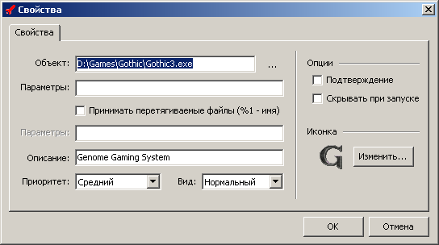
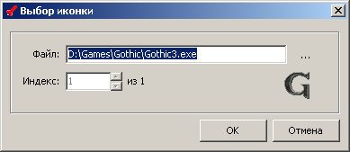

Данное окно служит инструментом для настройки свойств кнопки. Вызвать его можно, щелкнув правой кнопкой мыши по нужной кнопке на любой вкладке в главном окне и в появившемся меню выбрать пункт "Свойства...".
После редактирования свойств для применения изменений необходимо нажать кнопку OK.
1. Опция "Команда"
Включает в себя полное имя файла (путь к файлу и имя файла).
2. Опция "Параметры" (верхняя)
Включает в себя параметры запуска файла. Например, "-d -s -q".
3. Опция "Принимать перетягиваемые файлы"
Если опция включена, то активируется опция "Параметры", расположенная ниже.
4. Опция "Параметры" (нижняя)
Если использован параметр "%1", программа заменяет его на имя перетянутого на кнопку файла.
5. Опция "Описание"
Здесь указано описание к кнопке. Описание берется из файла ярлыка или из свойств файла.
6. Опция "Приоритет"
Опция позволяет запустить программу с указанным приоритетом. Имеет три варианта - низкий, средний, высокий.
7. Опция "Вид"
В опции указывается вид окна программы. Имеет четыре варианта - нормальный, максимизированный, минимизированный и скрытый.
8. Опция "Подтверждение"
Если опция включена, то при каждом нажатии на кнопку будет выдаваться сообщение с запросом подтверждения запуска программы.
9. Опция "Скрывать при запуске"
Если опция включена, то при каждом нажатии на кнопку окно Freelaunch будет скрываться.
10. Опция "Иконка - Изменить"
Опция позволяет изменить иконку - изображение, которое будет располагаться на кнопке. При нажатии на кнопку появляется окно "Выбор иконки", показанное ниже.

Данное окно служит инструментом для настройки изображения кнопки.
1. Опция "Файл"
Включает в себя полное имя файла, содержащего иконки/иконку (путь к файлу и имя файла).
2. Опция "Индекс"
Порядковый номер иконки в файле.